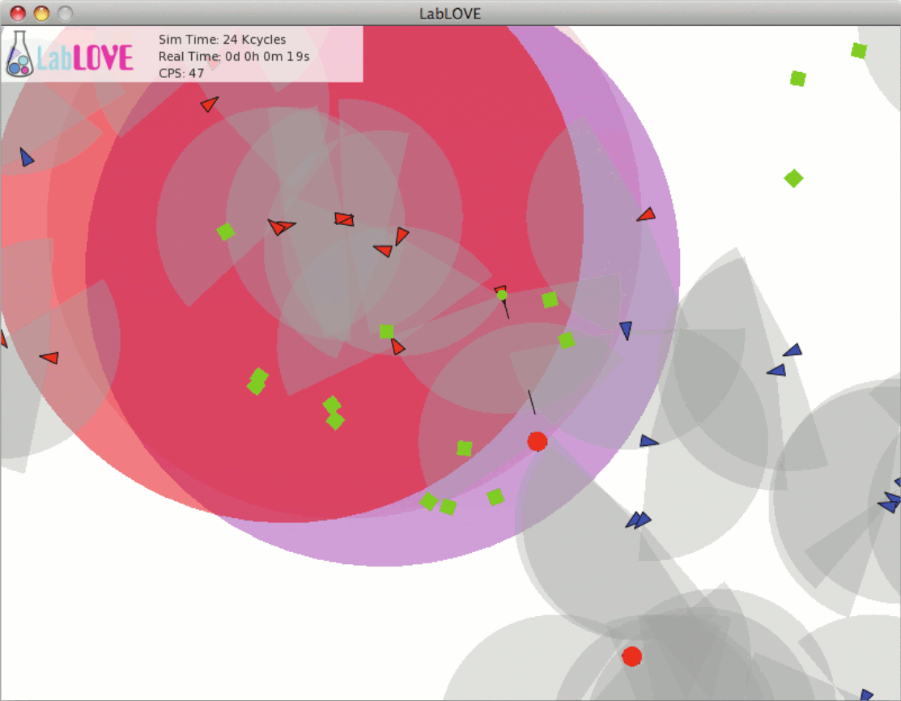

Laboratory of Life on a Virtual Environment
Welcome
 LabLOVE is an open source software platform for evolutionary multi-agent simulations. It allows for the definition of scenarios where populations of autonomous agents evolve through processes inspired in Darwinian evolution.LabLOVE is a scientific research tool with several fields of application, including the generation of artificial intelligence through evolution and biological and social simulations.
Agent controllers are modeled using gridbrain, an artificial brain model created by the author of this tool. The LabLOVE distribution includes libgridbrain, which provides a gridbrain implementation for general use.
In its current stage, LabLOVE comes with a two-dimensional continuous simulation environment. Due to its object-oriented and modular design, LabLOVE can be extended to support other simulation environments.
LabLOVE is implemented in C++ for high performance, and experimental scenarios are defined using the Lua scripting language.
The author of LabLOVE can be contacted at telmo /at/ telmomenezes /dot/ com.